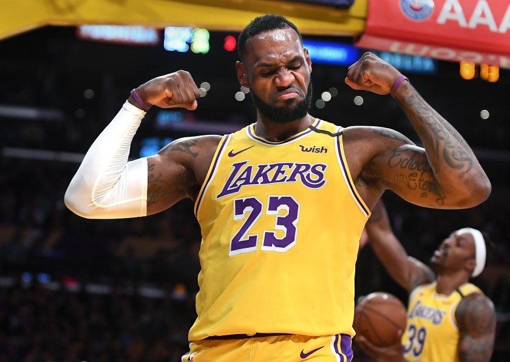

hobby
저는 농구하는 걸 좋아합니다. 그리고 노래 듣는 것도 정말 좋아합니다.
Left & Right
저는 농구를 좋아합니다. 그래서 한국외국어대학교 영어대 농구 동아리인 무대포에서 활동하고 있습니다. 사람들과 힘을 쓰면서 부딪히는 것을 좋아하지는 않지만 키가 크고 덩치가 크기 때문에 주로 센터를 보고 있습니다. 제가 가장 좋아하는 선수는 LA 레이커스에서 뛰고 있는 르브론 제임스라는 선수입니다. 키가 큼에도 불구하고 점프력이 부족해 덩크를 찍지는 못하지만 꾸준히 헬스를 해서 몸을 키우고 서전트 훈련을 통해 점프력을 키워 언젠가는 덩크를 하는 것이 제 꿈입니다.
제가 요즘 가장 많이 듣는 노래는 Post Malone의 노래입니다. 저는 어릴 때 락을 좋아했습니다. 대학교에 들어올 때까지 락아니면 팝송만 들었습니다. 그래서 새내기 때 크림슨 레드라는 영어대 락밴드에 들어가서 잠깐이나마 드럼을 치기도 했습니다. 하지만 점점 다른 장르의 음악에도 관심이 생기기 시작했고 EDM과 힙합도 듣기 시작하면서 지금은 모든 장르의 음악을 듣고 있습니다. 악기를 잘 연주하지는 못하지만 누구보다 노래 듣는 것을 좋아합니다.